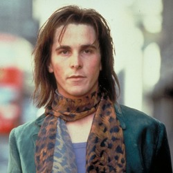

____________
Почему Кристиан Бэйл идеален?
(つ✧ω✧)つ
Топ 3 причины:
1. Потому что это он
2. См. пункт 1
3. См. пункт 2
Маленько фактов:
1. Первый актерский опыт Кристиан Бэйл получил в 1982 году, он снялся в рекламе кондиционера для белья Lenor;
(ﾉ◕ヮ◕)ﾉ*:･ﾟ✧
2. В 1983 году вышел еще один рекламный ролик с участием Кристиана, на этот раз он в роли рок-звезды рекламировал хлопья для завтрака Pac-Man. Вот ссылка на источник;
(ﾉ◕ヮ◕)ﾉ*:･ﾟ✧
3. Дебютом в большом кино для Кристиана Бэйла стала съемка в фильме советского режиссера Владимира Грамматикова "Мио, мой Мио".
Кристиан Бэйл в фильме "Мио, мой Мио"
Кристиан Бэйл в рекламе хлопьев Pac-Man
Независимое мнение аудитории
Джон Престон
"Он очень любит животных."

Артур Стюарт
"У него есть чувство прекрасного..."
Патрик Бейтман
"Он хорошо разбирается в музыке."
Брюс Уэйн
"Он лучше Паттисона."